Information
The Information option displays all the information about the current process.
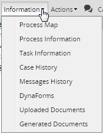
The Information option is available when the case is in progress, it means that the case has an step actively running.
The information available in the Information tab contains the following:
- Process Map
- Process Information
- Task Information
- Case History
- Messages History
- Dynaforms
- Uploaded Documents
- Generated Documents
Process Map
To access the Process Map, select it from the drop down menu in the Information tab.
A new tab opens displaying the map of the current process.
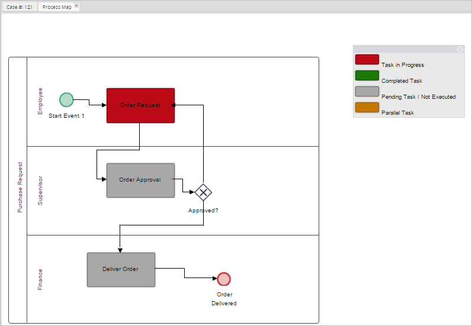
In this screen, the user can see which task the case is at, as well as the status of the other tasks in the case. Each task in the process map is color-coded according to its status. Next to the process, there is a key with the colors explained.
Please note that the process map shows the status of one case at a time. Therefore, in the case of start events that work as sub-processes, the process map will only show the status of the tasks belonging to the current case, from when a start event is executed a brand new case is created.
For example, when running a process similar to the image below:

This process creates two cases, each one following its own sequence.
When running the process, the first case is created (case #30). After the task is completed, the End Message Event will finish the current case. The process map will show only the status of the tasks executed until then (first pool).
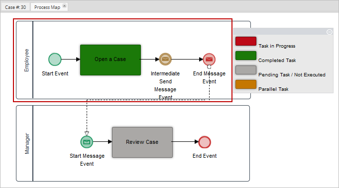
As soon as the End Message Event completes case #30, a new case (case #31) is created by the Start Receive Message event. The process map of case #31 will show only the status of tasks inside the second pool.
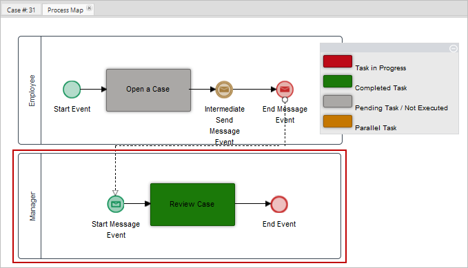
Process Information
To access the Process Information section, select it from the drop down menu in the Information tab
A pop up screen displays the following information about the current process:
- Title
- Description
- Category
- Author
- Create Date
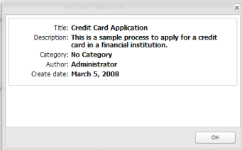
Task Information
To access the Task Information section, select it from the drop down menu in the Information tab.
A pop up screen displays the following information about the current task:
- Title
- Description
- Init Date
- Due Date
- Finish Date
- Task Duration
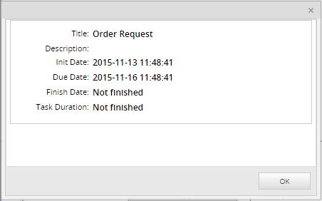
Case History
To access the Case History section, select it from the drop down menu in the Information tab.
This option allows the user to view all changes made to the form fields assigned to the tasks of the process that have already been completed or are still in progress.
Note: To be able to see the case history of a process, the user must have view permissions for Dynaforms.
The Case History screen lists the tasks routed or still in progress.
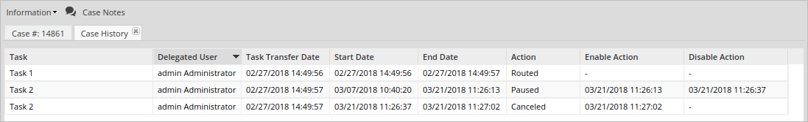
The Enable Action and Disable Action columns save the date of only paused or canceled cases. If the case action is "Paused," the Enable Action column of that record displays the pause date and the Disable Action column displays the unpause date. If the case action is "Canceled," the Enable Action column of that record displays the cancel date.
Intermediate events labels also display as a part of case histories. As of ProcessMaker 3.3.0, Case History displays the label configured in the process design. In previous versions it displays a generic label INTERMEDIATE-THROW-EMAIL-EVENT or INTERMEDIATE-CATCH-TIMER-EVENT. Look at the following process that describe ProcessMaker 3.3.0 behavior:
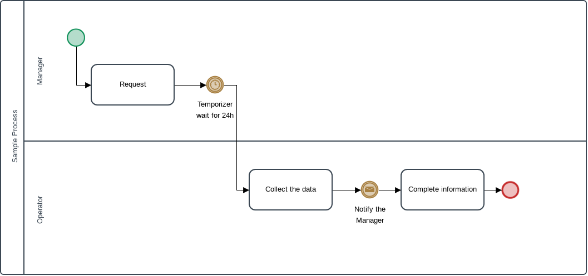
When running a case, the Case History show the intermediate labels as follows:

Otherwise, if the intermediate event has no name configured in the process design, the Case History should display Untitled - Intermediate [type] Event as follows:
- Throwing Events
- Email: Untitled - Intermediate Email Event
- Send Message: Untitled - Intermediate Send Message Event
- Catching Events
- Timer: Untitled - Intermediate Timer Event
- Receive Message: Untitled - Intermediate Receive Message Event
Message History
To access the Message History section, select it from the drop down menu in the Information tab.
By default, this screen displays the list of all the email messages that were sent when running a case. The showMessage parameter define if the notification related to the PMFSendMessage or PMFSendMessageToGroup will show in the Message History. In that case, if there is a notification sent by PMFunciones, it will be displayed if the value of showMessage is equal to true (the value set by default). Message History permissions allow or restrict users to see the email content, re-send or block the emails notifications. For more information about how to set message history permissions, please visit the Process Permissions page.
Warning: There is a known issue that the Message History list does not display task notifications by default. Unless, you add the View permission.
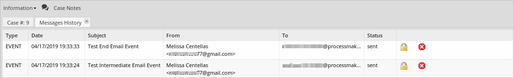
Preview: Displays all messages sent, not only routing messages and email notifications, but also any Case Notes added. To be able to preview a message, the View permission must be assigned to the user.

- Resend: Resends the message. Use this option when the message has not been sent or when the message needs to be resent. To be able to resend a message, a Resend permission must be assigned to the user.
Dynaforms
To access the Dynaforms section, select it from the drop down menu in the Information tab.
This screen displays all the Dynaforms defined in the process. The user must have Process permission to see the list of Dynaforms. The list of Dynaforms will appear during the execution of a case (Inbox, Draft) or at the end (Participated).
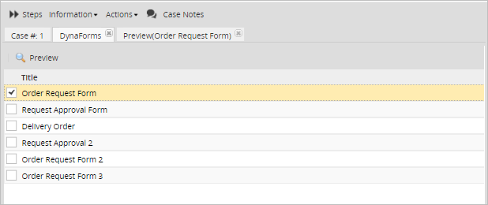
Preview
When selecting a Dynaform from the list and clicking on the Preview button, a preview of the information completed during the case displays in view mode.

Note: A problem may occur when users that have the Dynaform permission want to download the uploaded documents in the preview of a Dynaform that has more than one file field in it. When downloading the uploaded documents, they will find that the same document is downloaded, even when the files are different. This includes all the modified and unmodified variables in each step, before and after triggers. At the moment, there is no way to determine where each file belongs, so it will always download the last input document by default. The best way to prevent this from happening is to assign different input documents to each file field in a Dynaform.
Change Log
To access the Change Log section, select it from the drop down menu in the Information tab.
The Change Log section displays variable value changes after each step of each task in the process from a web application, mobile application or actions by email. This includes all modified and unmodified variables in each step, including before and after triggers.
To access the Change Log within a specific task, create a process permission with the type Dynaform and assign it to the users using the Group or User field. An example of this permission is shown below:

Access the Change Log by opening a case. Then, go to the Information tab menu and then select the Change Log option from the drop down menu.

A new screen displays the content of the variables, as well as their values and changes throughout each step, as shown in the image below:
Warning: Change Log does not register variable values of the PMFNewCase().
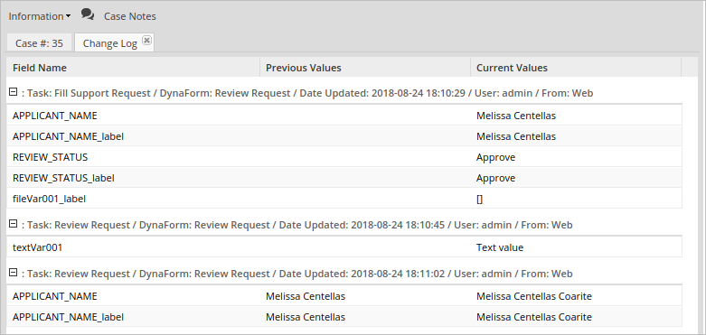
The Change Log displays the following information:
- Field Name: Name of the modified field. Usually the name that displays is the name given when the field was created.
- Previous Values: If changes were made, the previous values display in this field.
- Current Values: Displays all the fields and their modified values.
For each step the Change Log header displays:
- Task: The task name where the step changed variables.
- Dynaform: The Dynaform name where the step changed variables. As of ProcessMaker 3.7.2, the Change Log also displays information about:
- Running triggers
- ProcessMaker Variable changes
- Before Assignment
- Before Routing
- After Routing
- Date Updated: When these variables were modified.
- User: Current user in the task.
- From: Origin of the change:
Available Version: The From section is available as of ProcessMaker 3.3.0.
- Web Application
- Mobile Application
- Actions by Email (As of ProcessMaker 3.3.0)
Change Log From Actions by Email
Available Version: As of ProcessMaker 3.3.0.
The Change Log headers of the Actions By Email are as follows:
- Link to Fill a Form: In the header information shows the name of the Dynaform defined in the Action by Email configuration. The Change Log saves changes of variables present in the form.
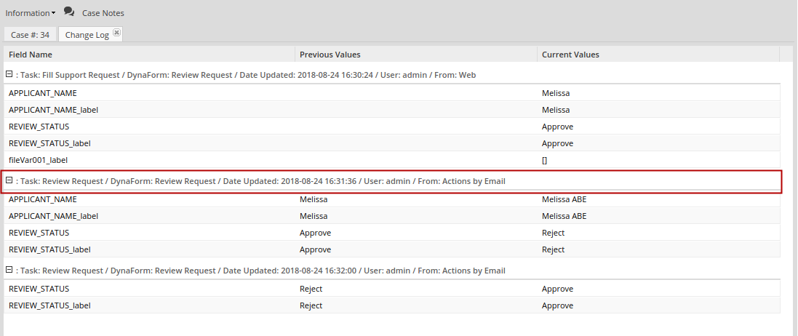
- Using a Field to Generate Action Links: In the header information, the Dynaform is set to N/A non-applicable, similarly to Custom Actions where there is one data saved in the change log. So, the only data saved in the Change Log corresponds to the variable that holds the value of the option selected in the form.
- Custom Actions: In the header information, the Dynaform is set to N/A non-applicable. The only data saved in Change Log corresponds to the result variable that holds the custom action (in the example below, it is result).
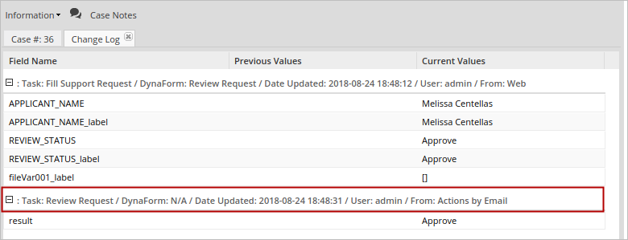
Note: Users who do not participate in the tasks defined in the permission required the PM_ALLCASES permission to search for the case using the Advanced Search option, and must have access to the Change Log option.
Uploaded Documents
To access the Generated Documents section, select it from the drop down menu in the Information tab. This section shows all the documents generated by any output document in the process.
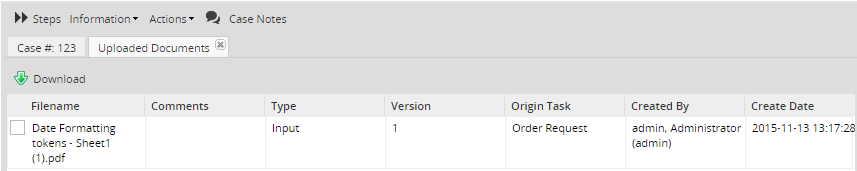
Users are able to download the document at any time during the process by clicking on the Download button and also by double clicking on the name of the input document.
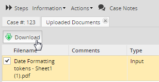
Generated Documents
This section shows all the documents generated by any output document in the process:
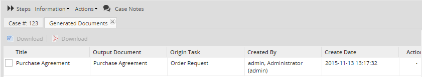
The document can be downloaded in .doc and .pdf formats by clicking on the corresponding icons. The file can also be downloaded by double clicking on the file name.